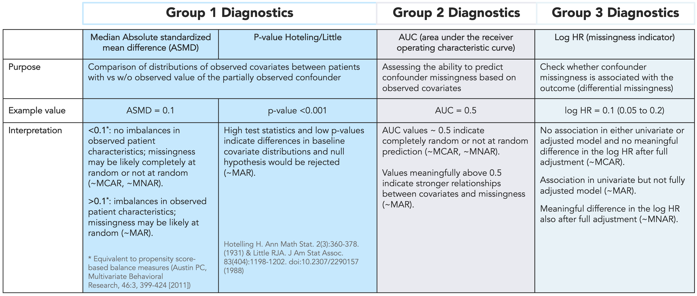

Routine structural missing data diagnostics
Janick Weberpals
routine_diagnostics.Rmd
smdi main functionalities
The smdi flagship function is
smdi_diagnose() which calls multiple sub-functions which
are also accessible separately. smdi_diagnose() builds on
theoretical concepts developed and validated in a comprehensive
simulation study as part of the FDA Sentinel Innovation Center
workstream Approaches
to Handling Partially Observed Confounder Data From Electronic Health
Records (EHR) In Non-randomized Studies of Medication Outcomes.
For details, we refer to [INSERT REFERENCE ONCE PUBLISHED] and [INSERT JSS REFERENCE ONCE PUBLISHED].
In brief, smdi_diagnose() compute three group
diagnostics.

Illustrative dataset
To illustrate the usage of the smdi package main
functions, we use the smdi_data dataset which is an example
dataset that comes bundled with the package. In brief, the
smdi_data dataset consists of a simulated lung cancer
cohort with a fictional comparison of two antineoplastic systemic
therapy regimens and a time-to-event outcome. More information on the
underlying dataset is given in the Data
generation article.
smdi::smdi_data %>%
dplyr::glimpse()
#> Rows: 2,500
#> Columns: 14
#> $ exposure <int> 1, 1, 0, 1, 1, 0, 1, 0, 1, 1, 0, 1, 1, 0, 0, 1, 1, 0, 0,…
#> $ age_num <dbl> 35.24, 51.18, 88.17, 50.79, 40.52, 64.57, 73.58, 42.38, …
#> $ female_cat <fct> 1, 0, 0, 0, 0, 0, 0, 1, 1, 1, 1, 0, 0, 1, 0, 0, 1, 1, 1,…
#> $ smoking_cat <fct> 1, 1, 0, 1, 1, 0, 1, 1, 1, 0, 0, 1, 1, 1, 1, 0, 1, 0, 1,…
#> $ physical_cat <fct> 1, 1, 0, 0, 0, 0, 1, 0, 1, 0, 0, 0, 0, 0, 1, 1, 1, 0, 0,…
#> $ alk_cat <fct> 0, 0, 0, 0, 0, 0, 0, 0, 0, 0, 0, 0, 0, 0, 0, 0, 0, 0, 0,…
#> $ histology_cat <fct> 1, 1, 0, 0, 0, 0, 0, 0, 0, 0, 0, 1, 0, 0, 0, 0, 1, 0, 0,…
#> $ ses_cat <fct> 2_middle, 3_high, 2_middle, 2_middle, 2_middle, 2_middle…
#> $ copd_cat <fct> 1, 0, 1, 1, 1, 0, 1, 1, 1, 1, 0, 1, 1, 1, 1, 0, 1, 0, 1,…
#> $ eventtime <dbl> 17.8706642, 5.7247147, 4.4106465, 13.4542815, 0.4781390,…
#> $ status <int> 1, 1, 1, 1, 1, 1, 1, 1, 1, 1, 1, 1, 0, 1, 1, 1, 1, 1, 1,…
#> $ ecog_cat <fct> 1, NA, 0, 1, NA, 0, 1, 0, 1, NA, 1, NA, NA, 1, 1, 0, 1, …
#> $ egfr_cat <fct> NA, NA, 1, 1, 1, 0, 1, 0, NA, 0, 1, 1, 0, 0, 0, 0, NA, N…
#> $ pdl1_num <dbl> 40.29, NA, 33.40, 41.23, NA, 26.11, 44.68, NA, 43.12, 32…The dataset consists of 2,500 patients and 14 variables with
exposure representing the two treatment regimens under
comparison and status and eventtime the vital
status and censoring time, respectively. For more information, please
checkout:
# dataset with simulated missingness
?smdi::smdi_data()
# complete dataset
?smdi::smdi_data_complete()Descriptives
As with basically any first step into exploring (new) datasets, it’s
a good idea to get an overview of partially observed covariates and the
magnitude of missingness. For this smdi comes with two
convenient functions to screen the data for missingness.
This can be either as a table …
smdi_data %>%
smdi_summarize()
#> # A tibble: 3 × 3
#> covariate n_miss perc_miss
#> <chr> <int> <chr>
#> 1 pdl1_num 971 38.84%
#> 2 ecog_cat 786 31.44%
#> 3 egfr_cat 536 21.44%… or visually
covars_missing <- smdi_summarize(data = smdi_data) %>%
pull(covariate)
smdi_data %>%
smdi_vis(covar = covars_missing)For smdi_vis, it’s also possible to query the
top n missing covariates in a dataset: